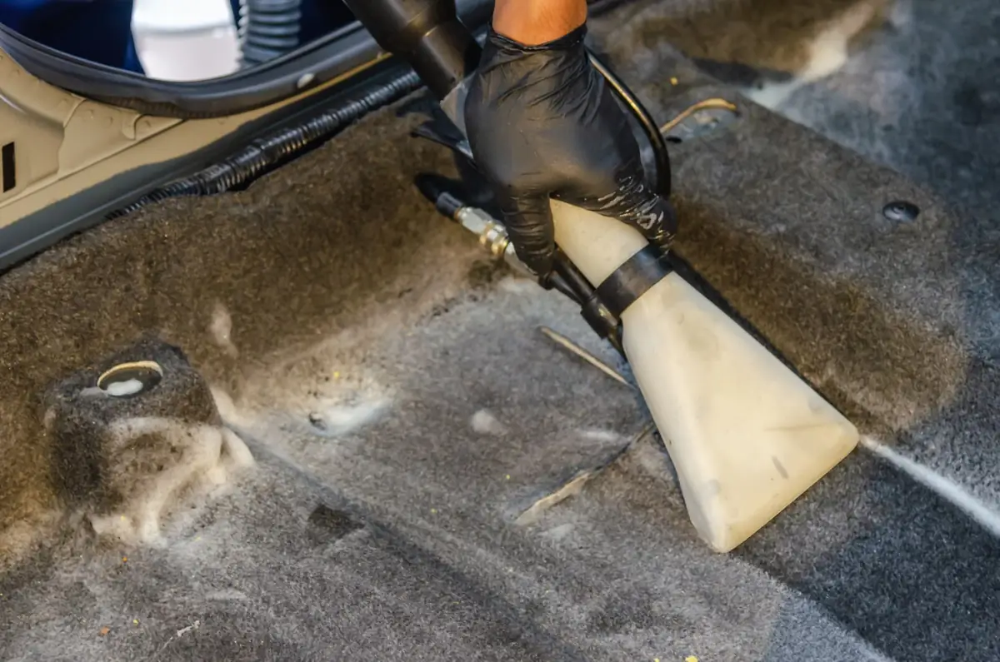
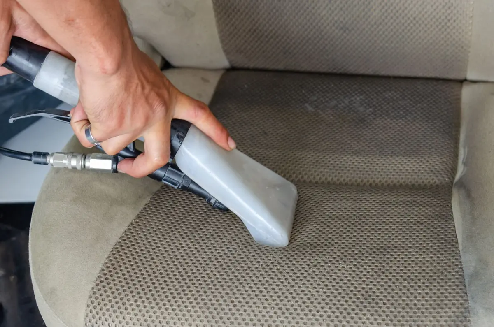

Limpieza de tapicería de coche en Sevilla
En Brío Car Wash (Sevilla) la limpieza de tapicería es a mano, con los asientos desmontados cuando hace falta. También limpio moquetas, bajos y paneles de puerta. Con cita previa. El precio depende del coche: escríbeme por WhatsApp con una foto y te lo digo.
Antes y después

 DespuésAntesImagen de ejemplo
DespuésAntesImagen de ejemplo

 DespuésAntesImagen de ejemplo
DespuésAntesImagen de ejemplo

Imagen de ejemplo
Imagen de ejemploTodo lo que se desmonta, se limpia
- Desmonto asientosSí, todos, si hace falta.
- Moquetas y bajosAspirado y limpieza a fondo.
- Paneles y plásticosPuertas, salpicadero y lo que se toca.
- SecadoY vuelve a montarse todo.
Cuánto tarda depende del coche. Al pedir cita te digo cuándo puedes recogerlo.
Qué limpio y cuánto cuesta
¿Cuánto cuesta limpiar la tapicería de un coche en Sevilla?
Depende del coche y de cómo estén los asientos. Te doy el precio por WhatsApp, con una foto, antes de empezar.
| Qué | Qué se hace | Precio |
|---|---|---|
| Tapicería | Asientos de tela o similar, desmontados si hace falta. | a consultar |
| Moquetas y bajos | Aspirado y limpieza. | a consultar |
| Paneles de puerta | Limpieza de plásticos y paneles. | a consultar |
| + Ozono | Para quitar el olor de tabaco, comida o mascotas. | +25 € |
Un BRÍO premium o deluxe parte desde 50 € y 90 €. Mira qué incluye cada BRÍO.
Su cara
«Lo han dejado como nuevo.»
Reseña de ejemplo, 5 ★: «Los asientos eran irreconocibles». Nico contestó: «Nos dio guerra, pero mereció la pena».
Reseña de ejemplo
Lo que me preguntan de la tapicería
¿Cuánto cuesta limpiar la tapicería de un coche en Sevilla?
Depende del coche y del estado de los asientos. Te lo digo por WhatsApp con una foto, antes de empezar. Si además quieres quitar olores, el ozono son 25 €.
¿Se pueden quitar manchas viejas de los asientos de tela?
Muchas sí; las de hace años, no siempre. Mándame una foto por WhatsApp y te digo con sinceridad qué se puede esperar.
¿Cuánto tarda la limpieza de tapicería y cuándo puedo usar el coche?
Depende del coche y de lo que haya que desmontar. Al pedir cita te digo cuánto tarda y cuándo puedes recogerlo. Trabajo un coche cada vez, así que no hay cola.
¿Desmontáis los asientos? ¿Limpiáis también moquetas y paneles de puerta?
Sí. Desmonto los asientos cuando hace falta y limpio moquetas, bajos, paneles de puerta y tapicerías.
¿Se puede combinar con ozono?
Sí. El ozono (25 €) se puede añadir a cualquier trabajo y ayuda a quitar olores persistentes de tabaco, comida, mascotas o humedad.